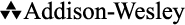

A Brief Guide to the Emerging World of Polyglot Persistence
Pramod J. Sadalage Martin Fowler

Upper Saddle River, NJ • Boston • Indianapolis • San Francisco New York • Toronto • Montreal • London • Munich • Paris • Madrid Capetown • Sydney • Tokyo • Singapore • Mexico City